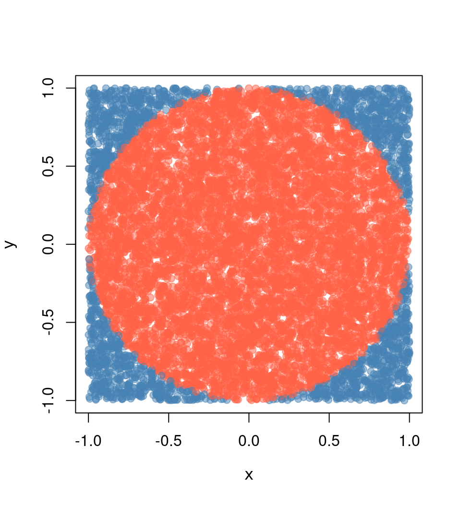

4 Simulating \(pi\)
The following is an example many people (including me) have used to illustrate parallel computing with R. The example is straightforward: we want to approximate pi by doing some Monte Carlo simulations.
We know that the area of a circle is \(A = \pi r^2\), which is equivalent to \(\pi = A/r^2\), so if we can approximate the Area of a circle, then we can approximate \(\pi\). How do we do this?
Using Monte Carlo experiments, we can approximate the probability of a random point \(x\) falling within the unit circle using the following formula:
\[ \hat p = \frac{1}{n}\sum_i \mathbf{1}(x \in \mbox{Circle}) \]
This approximation, \(\hat p\), multiplied by the area of the square containing the circle, which has an area equal to \((2\times r)^2\), thus, we can finally write
\[ \hat \pi = \hat p \times (2\times r)^2 / r^2 = 4 \hat p \]
4.1 Submitting jobs to Slurm
We will primarily work by submitting jobs using the sbatch function. This function takes as its main argument a bash file with the program to execute. In the case of R, a regular bash file looks something like this:
#!/bin/sh
#SBATCH --job-name=sapply
#SBATCH --time=00:10:00
module load R/4.2.2
Rscript --vanilla 01-sapply.RThis file has three components:
The Slurm flags
#SBATCH: These comment-like entries pass Slurm options to the job. In this example, we only specify the optionsjob-nameandtime. Other common options would includeaccountandpartition.Loading R
module load R/4.2.2: Depending on your system’s configuration, you may or may not need to load modules or run bash scripts before being able to run R. In this example, we are loading R version 4.2.2 usingLMod(see previous section).Executing the R script: After specifying Slurm options and loading whatever needs to be loaded before executing R, we are using
RScriptto execute the program we wrote.
Submission is then made as follows:
sbatch 01-sapply.slurmThe following examples have two files, a bash script and an R script, to be called by Slurm.
4.1.1 Case 1: Single job, single core job
The most basic way is submitting a job using the sbatch command. In this case, you must have two files: (1) An R script and (2) a bash script. e.g.
The contents of the R script (01-sapply.R) are:
# Model parameters
nsims <- 1e3
n <- 1e4
# Function to simulate pi
simpi <- function(i) {
p <- matrix(runif(n*2, -1, 1), ncol = 2)
mean(sqrt(rowSums(p^2)) <= 1) * 4
}
# Approximation
set.seed(12322)
ans <- sapply(1:nsims, simpi)
message("Pi: ", mean(ans))
saveRDS(ans, "01-sapply.rds")The contents of the bashfile (01-sapply.slurm) are:
#!/bin/sh
#SBATCH --job-name=sapply
#SBATCH --time=00:10:00
module load R/4.2.2
Rscript --vanilla 01-sapply.R4.1.2 Case 2: Single job, multicore job
Imagine that we would like to use more than one processor for this job, using the parallel::mclapply function from the parallel package.1 Then, besides adapting the code, we need to tell Slurm that we are using more than one core per task, as in the following example:
R script (02-mclapply.R):
# Model parameters
nsims <- 1e3
n <- 1e4
ncores <- 4L
# Function to simulate pi
simpi <- function(i) {
p <- matrix(runif(n*2, -1, 1), ncol = 2)
mean(sqrt(rowSums(p^2)) <= 1) * 4
}
# Approximation
set.seed(12322)
ans <- parallel::mclapply(1:nsims, simpi, mc.cores = ncores)
ans <- unlist(ans)
message("Pi: ", mean(ans))
saveRDS(ans, "02-mclpply.rds")Bashfile (02-mclapply.slurm):
#!/bin/sh
#SBATCH --job-name=mclapply
#SBATCH --time=00:10:00
#SBATCH --cpus-per-task=4
module load R/4.2.2
Rscript --vanilla 02-mclapply.R4.2 Jobs with the slurmR package
The slurmR R package (Vega Yon and Marjoram 2019, 2022) is a lightweight wrapper of Slurm. The package’s primary functions are the *apply family–mainly through Slurm job arrays–and the makeSlurmCluster()–which is a wrapper of makePSOCKcluster.
This section will illustrate how to submit jobs using the makeSlurmCluster() function and Slurm_sapply. Furthermore, the last example demonstrates how we can skip writing Slurm scripts entirely using the sourceSlurm() function included in the package.
4.2.1 Case 3: Single job, multinode job
In this case, there is no simple way to submit a multinodal job to Slurm; unless you use the slurmR package.2 In this example, we will combine slurmR with the parallel package’s parSapply function to submit a multinodal job using the function makeSlurmCluster(). With it, slurmR will submit a job requesting njobs tasks (processors) that could span multiple nodes,3 and create a Socket cluster out of it (like using makePSOCKcluster.) One thing to keep in mind is that Socket clusters are limited in the number of connections a single R session can span. You can read more about it here and here.
R script (03-parsapply-slurmr.R):
# Model parameters
nsims <- 1e3
n <- 1e4
ncores <- 4L
# Function to simulate pi
simpi <- function(i) {
p <- matrix(runif(n*2, -1, 1), ncol = 2)
mean(sqrt(rowSums(p^2)) <= 1) * 4
}
# Setting up slurmR
library(slurmR) # This also loads the parallel package
# Making the cluster, and exporting the variables
cl <- makeSlurmCluster(ncores)
# Approximation
clusterExport(cl, c("n", "simpi"))
ans <- parSapply(cl, 1:nsims, simpi)
# Closing connection
stopCluster(cl)
message("Pi: ", mean(ans))
saveRDS(ans, "03-parsapply-slurmr.rds")Bashfile (03-parsapply-slurmr.slurm):
#!/bin/sh
#SBATCH --job-name=parsapply
#SBATCH --time=00:10:00
module load R/4.2.2
Rscript --vanilla 03-parsapply-slurmr.R4.2.2 Case 4: Multi job, single/multi-core
Another way to submit jobs is using job arrays. A job array is a job repeated njobs times with the same configuration. The main difference between replicates is what you do with the SLURM_ARRAY_TASK_ID environment variable. This variable is defined within each replicate and can be used to make the “subjob” depending on that.
Here is a quick example using R
ID <- Sys.getenv("SLURM_ARRAY_TASK_ID")
if (ID == 1) {
...[do this]...
} else if (ID == 2) {
...[do that]...
}The slurmR R package makes submitting job arrays easy. Again, with the simulation of pi, we can do it in the following way:
R script (04-slurm_sapply.R):
# Model parameters
nsims <- 1e3
n <- 1e4
# ncores <- 4L
njobs <- 4L
# Function to simulate pi
simpi <- function(i, n.) {
p <- matrix(runif(n.*2, -1, 1), ncol = 2)
mean(sqrt(rowSums(p^2)) <= 1) * 4
}
# Setting up slurmR
library(slurmR) # This also loads the parallel package
# Approximation
ans <- Slurm_sapply(
1:nsims, simpi,
n. = n,
njobs = njobs,
plan = "collect",
tmp_path = "/scratch/vegayon" # This is where all temp files will be exported
)
message("Pi: ", mean(ans))
saveRDS(ans, "04-slurm_sapply.rds")Bashfile (04-slurm_sapply.slurm):
#!/bin/sh
#SBATCH --job-name=slurm_sapply
#SBATCH --time=00:10:00
module load R/4.2.2
Rscript --vanilla 04-slurm_sapply.ROne of the main benefits of using this approach instead of the makeSlurmCluster function (and thus, working with a SOCK cluster) are:
The number of jobs is not limited here (only by the admin, but not by R).
If a job fails, then we can re-run it using
sbatchonce again (see example here).You can check the individual logs of each process using the function
Slurm_lob().You can submit the job and quit the R session without waiting for it to finalize. You can always read back the job using the function
read_slurm_job([path-to-the-temp])
4.2.3 Case 5: Skipping the .slurm file
The slurmR package has a function named sourceSlurm that can be used to avoid creating the .slurm file. The user can add the SBATCH options to the top of the R script (including the #!/bin/sh line) and submit the job from within R as follows:
R script (05-sapply.R):
#!/bin/sh
#SBATCH --job-name=sapply-sourceSlurm
#SBATCH --time=00:10:00
# Model parameters
nsims <- 1e3
n <- 1e4
# Function to simulate pi
simpi <- function(i) {
p <- matrix(runif(n*2, -1, 1), ncol = 2)
mean(sqrt(rowSums(p^2)) <= 1) * 4
}
# Approximation
set.seed(12322)
ans <- sapply(1:nsims, simpi)
message("Pi: ", mean(ans))
saveRDS(ans, "05-sapply.rds")From the R console (is OK if you are in the Head node)
slurmR::sourceSlurm("05-sapply.R")And voilá! A temporary bash file will be generated to submit the R script to the queue. The following video shows a possible output on the University of Utah’s CHPC with slurmR version 0.5-3:
This function is sort of a wrapper of
makeForkcluster. Forking provides a way to duplicate a process in the OS without replicating the memory, which is both faster and efficient.↩︎Although possible, most multinode jobs will be allocated if insufficient threads are within a single node. Remember Slurm does not run the jobs but rather reserves computational resources for you to run it.↩︎